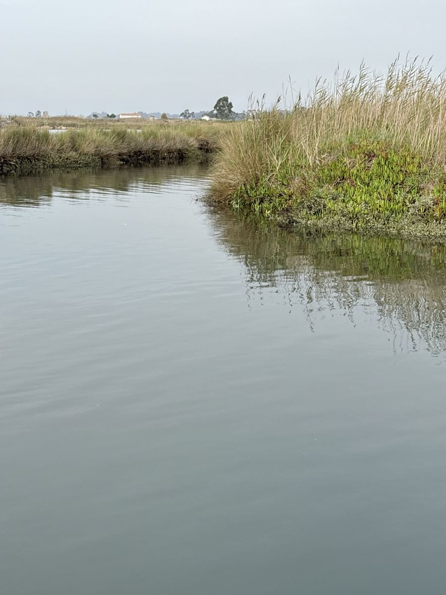
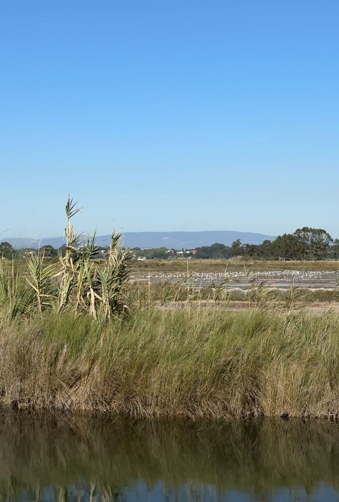
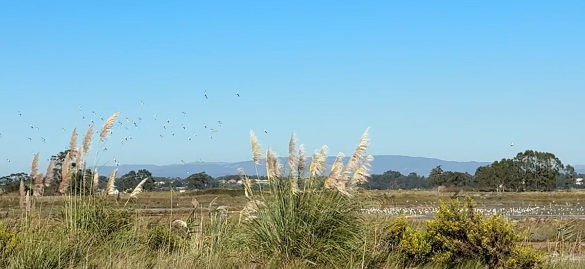
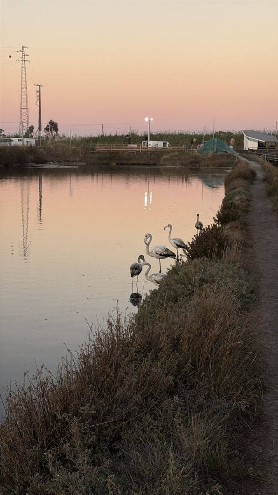
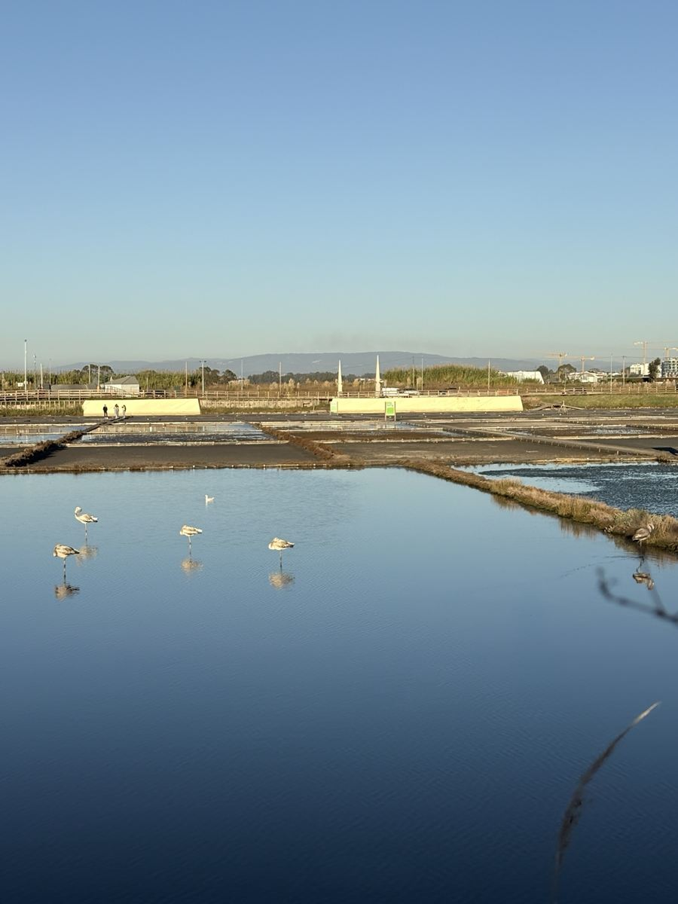
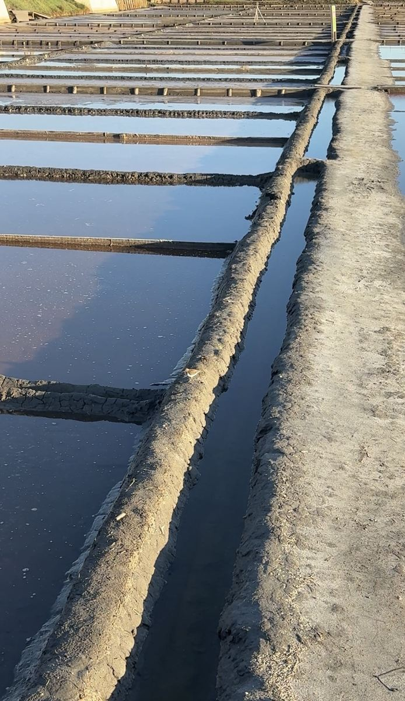
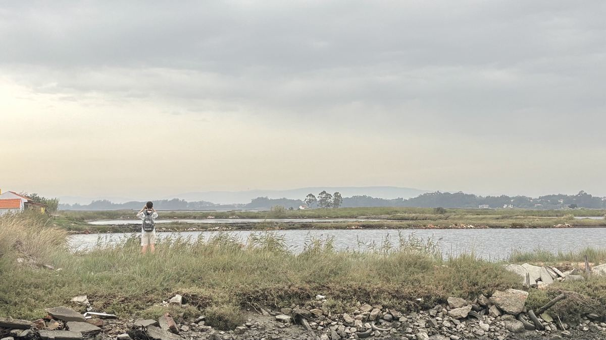

What I see when I walk beside Antiga LotaO que vejo quando caminho junto à Antiga Lota
I live in Aveiro, and I return to these waters and salt pans often. The former port land is not alone in the landscape. Water channels, wetland plants and birds are immediately around it. These are photographs of what I see on my walks, not images from a distant reserve.
I am asking for Antiga Lota to be spared new hotel and residential development and considered for ecological restoration. Years of building work, followed by traffic, lighting and daily activity, could affect the neighbouring lagoon. Before changing this place irreversibly, independent specialists should examine its ecological connections and the alternative of leaving more land for nature.
Photographs taken by the author. Antiga Lota and Rua do Sal series: September 2026. Exact dates of some photographs from neighbouring salt pans remain to be checked against original files. Bird identifications based on visual or sound observations may require specialist confirmation. This gallery is not a formal ecological survey.
Vivo em Aveiro e volto muitas vezes a estas águas e salinas. A antiga área portuária não está isolada da paisagem. Canais, vegetação das zonas húmidas e aves encontram-se mesmo ao seu redor. Estas são fotografias do que vejo nas minhas caminhadas, não imagens de uma reserva distante.
Peço que a Antiga Lota seja preservada de nova construção hoteleira e habitacional e considerada para recuperação ecológica. Anos de obras, seguidos de trânsito, iluminação e atividade diária, poderão afetar a ria vizinha. Antes de transformar irreversivelmente este lugar, é essencial que especialistas independentes avaliem as ligações ecológicas e a alternativa de deixar mais espaço à natureza.
Fotografias da autora. Séries da Antiga Lota e da Rua do Sal: setembro de 2026. As datas exatas de algumas imagens das salinas próximas devem ser confirmadas nos ficheiros originais. A identificação de aves por observação visual ou acústica pode exigir confirmação por especialistas. Esta galeria não constitui um estudo ecológico formal.
Antiga Lota · September 2026Antiga Lota · setembro de 2026



Rua do Sal · September 2026Rua do Sal · setembro de 2026


Nearby salt pans · field observationsSalinas próximas · observações no terreno





